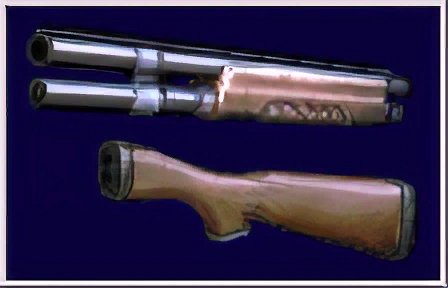

|
|
| Información general | |
|---|---|
| Poder de fuego | Alto |
| Velocidad de fuego | Bajo |
| Clase de arma | Escopeta |
| Valor | Ninguno |
| Fuente: Resident Evil Wiki | |
Descripcion
La Remington M1100 es una escopeta que aparece en Resident Evil 2. Esta escopeta se obtiene después de combinar la Remington M1100-P con las piezas de escopeta. Es exclusiva de Leon Scott Kennedy , aunque también es usada por Chris Redfield en el minijuego Extreme Battle.
Es un arma muy fuerte y útil contra zombis, lickers e incluso las plantas Ivy . Puede llevar 7 cartuchos cargados gracias a la mejora. El retroceso del arma es suficiente para desorientar a Leon, sin embargo, como Chris es más fuerte, es capaz de controlarla más rápido y reorientarse.
Ubicación
Las piezas para mejorar la escopeta se encuentran en el pasaje oeste de la fábrica abandonada, sobre un cadáver al final de la rama norte del pasaje.

Curiosidades
- En la beta de Resident Evil 2, el diseño del arma era diferente.
- A pesar de que el daño es muy superior, el alto retroceso del arma la vuelve una opción cuestionable que la escopeta sin mejorar.
- A pesar de que el sistema de recarga del arma permite que el portador pueda disparar más rápido que con la Remington M1100-P, dado el tiempo que Leon necesita para recomponerse después de cada disparo, el tiempo entre disparos es prácticamente el mismo.
- Si se dispara a los zombis apuntando desde el torso para arriba, la potencia de disparo será capaz de destruir gran parte del torso y la cabeza del zombi.